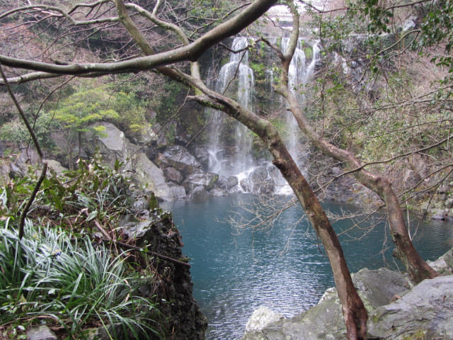
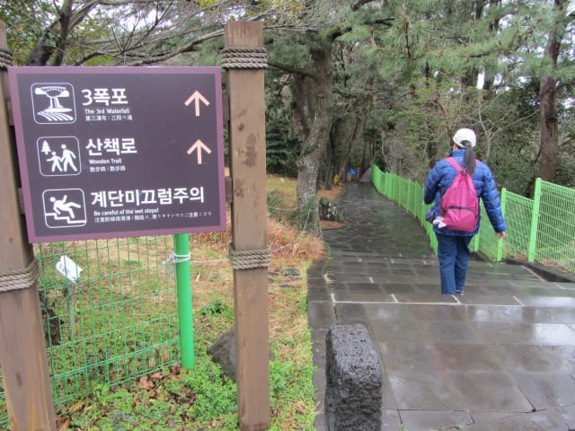

在酒店附近的 NH Bank 兌換了韓元, 便可以安心開始這韓國之旅的第一個行程 – 天帝淵瀑布。沿馬路掉頭走, 經過酒店, 繼續往前走一會, 馬路旁有一間面積頗大的超級市場, 便進內看看。
超級市場內的蔬菜都用低溫及霧氣保持新鮮, 反觀香港超級市場的蔬菜, 用膠袋包裝, 放在普通的架上, 質素相差甚遠矣! 怎不令我們羨慕!
繼續往前走, 街道上停放了一輛美國式的 Limo 款房車, 都是超級富豪的玩意兒。
濟州島天帝淵瀑布
天帝淵瀑布 (천제연폭포 Cheonjeyeon Falls)
相傳玉皇大帝的七仙女下凡, 在這裡遊玩及在池塘中淋浴, 在返回天庭前把這池子命名為上天的池子－天帝淵, 這便是天帝淵瀑布名稱的由來。
天帝淵瀑布共有三段瀑布, 景色各異。第一段瀑布落下至水深21米的池塘後, 接著經第二及第三段瀑布, 然後流進大海。
不一會便來到天帝淵瀑布的入口。
天帝淵瀑布入場費每位 2,500韓元, 在濟州島景點來說, 算是非常便宜的了!
買了入場票, 便可以進入天帝淵瀑布。我們會順序先往第一段瀑布, 然後往第二段及第三段瀑布遊覽。
天帝淵第一段瀑布
沿步道按標示往下走一會, 便到達相傳玉皇大帝七仙女在這裡淋浴的天帝淵。哈哈~~ 突然間令人產生一些暇想。今天天色不好, 這裡的遊客不多, 相信這是下雨天的唯一好處。

天帝淵第二段瀑布
遊覽完天帝淵瀑布第一段瀑布, 返回山坡上, 然後按往第二段瀑布 (2폭포)標示走。

沿溪流旁樹林間的步道走了一會, 開始聽到「隆、隆」的水聲, 原來已經來到天帝淵第二段瀑布的上面。
沿彎彎曲曲, 環境優美的步道一直往下走。

天帝淵第二段瀑布不時在樹梢間若隱若現的閃出。
繼續往下走。剛才在第二段瀑布還有廖廖幾位旅客, 到這裡半個也沒有了!

來到天帝淵第二段瀑布下的展望台, 也是欣賞瀑布的最佳地點。瀑布嬝嬝如絲, 如詩如畫。

天帝淵第三段瀑布
在天帝淵瀑布第二段瀑布流連了一會, 循原路返回山坡上, 繼續往最後的一段瀑布 – 天帝淵瀑布第三段瀑布。沿途都有清楚的路標, 不會走錯路的。

途中會經過橫躺中文川兩岸的仙臨橋 (七仙橋), 稍後我們便從這裡離開天帝淵瀑布。

繼續朝天帝淵瀑布第三段瀑布的方向走。
來到天帝淵瀑布第三段瀑布的山坡上, 接著沿樓梯一直往下走。
來到天帝淵瀑布第三段瀑布的展望台。第三段瀑布收集了上游的河水, 形成較壯觀的瀑布。